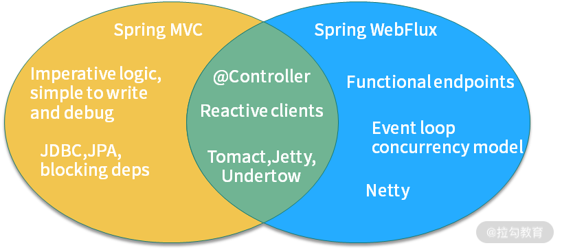

15 案例分析：从 BIO 到 NIO，再到 AIO¶
Netty 的高性能架构，是基于一个网络编程设计模式 Reactor 进行设计的。现在，大多数与 I/O 相关的组件，都会使用 Reactor 模型，比如 Tomcat、Redis、Nginx 等，可见 Reactor 应用的广泛性。
Reactor 是 NIO 的基础。为什么 NIO 的性能就能够比传统的阻塞 I/O 性能高呢？我们首先来看一下传统阻塞式 I/O 的一些特点。
阻塞 I/O 模型¶

如上图，是典型的 BIO 模型，每当有一个连接到来，经过协调器的处理，就开启一个对应的线程进行接管。如果连接有 1000 条，那就需要 1000 个线程。
线程资源是非常昂贵的，除了占用大量的内存，还会占用非常多的 CPU 调度时间，所以 BIO 在连接非常多的情况下，效率会变得非常低。
下面的代码是使用 ServerSocket 实现的一个简单 Socket 服务器，监听在 8888 端口。
public class BIO {
static boolean stop = false;
public static void main(String[] args) throws Exception {
int connectionNum = 0;
int port = 8888;
ExecutorService service = Executors.newCachedThreadPool();
ServerSocket serverSocket = new ServerSocket(port);
while (!stop) {
if (10 == connectionNum) {
stop = true;
}
Socket socket = serverSocket.accept();
service.execute(() -> {
try {
Scanner scanner = new Scanner(socket.getInputStream());
PrintStream printStream = new PrintStream(socket.getOutputStream());
while (!stop) {
String s = scanner.next().trim();
printStream.println("PONG:" + s);
}
} catch (Exception ex) {
ex.printStackTrace();
}
});
connectionNum++;
}
service.shutdown();
serverSocket.close();
}
}
启动之后，使用 nc 命令进行连接测试，结果如下。
$ nc -v localhost 8888
Connection to localhost port 8888 [tcp/ddi-tcp-1] succeeded!
hello
PONG:hello
nice
PONG:nice
使用 “04 | 工具实践：如何获取代码性能数据？”提到的 JMC 工具，在录制期间发起多个连接，能够发现有多个线程在运行，和连接数是一一对应的。

可以看到，BIO 的读写操作是阻塞的，线程的整个生命周期和连接的生命周期是一样的，而且不能够被复用。
就单个阻塞 I/O 来说，它的效率并不比 NIO 慢。但是当服务的连接增多，考虑到整个服务器的资源调度和资源利用率等因素，NIO 就有了显著的效果，NIO 非常适合高并发场景。
非阻塞 I/O 模型¶
其实，在处理 I/O 动作时，有大部分时间是在等待。比如，socket 连接要花费很长时间进行连接操作，在完成连接的这段时间内，它并没有占用额外的系统资源，但它只能阻塞等待在线程中。这种情况下，系统资源并不能被合理利用。
Java 的 NIO，在 Linux 上底层是使用 epoll 实现的。epoll 是一个高性能的多路复用 I/O 工具，改进了 select 和 poll 等工具的一些功能。在网络编程中，对 epoll 概念的一些理解，几乎是面试中必问的问题。
epoll 的数据结构是直接在内核上进行支持的，通过 epoll_create 和 epoll_ctl 等函数的操作，可以构造描述符（fd）相关的事件组合（event）。
这里有两个比较重要的概念：
- fd 每条连接、每个文件，都对应着一个描述符，比如端口号。内核在定位到这些连接的时候，就是通过 fd 进行寻址的。
- event 当 fd 对应的资源，有状态或者数据变动，就会更新 epoll_item 结构。在没有事件变更的时候，epoll 就阻塞等待，也不会占用系统资源；一旦有新的事件到来，epoll 就会被激活，将事件通知到应用方。
关于 epoll 还会有一个面试题，相对于 select，epoll 有哪些改进？
你可以这样回答：
- epoll 不再需要像 select 一样对 fd 集合进行轮询，也不需要在调用时将 fd 集合在用户态和内核态进行交换；
- 应用程序获得就绪 fd 的事件复杂度，epoll 是 O(1)，select 是 O(n)；
- select 最大支持约 1024 个 fd，epoll 支持 65535 个；
- select 使用轮询模式检测就绪事件，epoll 采用通知方式，更加高效。
我们还是以 Java 中的 NIO 代码为例，来看一下 NIO 的具体概念。
public class NIO {
static boolean stop = false;
public static void main(String[] args) throws Exception {
int connectionNum = 0;
int port = 8888;
ExecutorService service = Executors.newCachedThreadPool();
ServerSocketChannel ssc = ServerSocketChannel.open();
ssc.configureBlocking(false);
ssc.socket().bind(new InetSocketAddress("localhost", port));
Selector selector = Selector.open();
ssc.register(selector, ssc.validOps());
while (!stop) {
if (10 == connectionNum) {
stop = true;
}
int num = selector.select();
if (num == 0) {
continue;
}
Iterator<SelectionKey> events = selector.selectedKeys().iterator();
while (events.hasNext()) {
SelectionKey event = events.next();
if (event.isAcceptable()) {
SocketChannel sc = ssc.accept();
sc.configureBlocking(false);
sc.register(selector, SelectionKey.OP_READ);
connectionNum++;
} else if (event.isReadable()) {
try {
SocketChannel sc = (SocketChannel) event.channel();
ByteBuffer buf = ByteBuffer.allocate(1024);
int size = sc.read(buf);
if(-1==size){
sc.close();
}
String result = new String(buf.array()).trim();
ByteBuffer wrap = ByteBuffer.wrap(("PONG:" + result).getBytes());
sc.write(wrap);
} catch (Exception ex) {
ex.printStackTrace();
}
} else if (event.isWritable()) {
SocketChannel sc = (SocketChannel) event.channel();
}
events.remove();
}
}
service.shutdown();
ssc.close();
}
}
上面这段代码比较长，是使用 NIO 实现的和 BIO 相同的功能。从它的 API 设计上，我们就能够看到 epoll 的一些影子。
首先，我们创建了一个服务端 ssc，并开启一个新的事件选择器，监听它的 OP_ACCEPT 事件。
ServerSocketChannel ssc = ServerSocketChannel.open();
Selector selector = Selector.open();
ssc.register(selector, ssc.validOps());
共有 4 种事件类型，分别是：
- 新连接事件（OP_ACCEPT）；
- 连接就绪事件（OP_CONNECT）；
- 读就绪事件（OP_READ）；
- 写就绪事件（OP_WRITE）。
任何网络和文件操作，都可以抽象成这四个事件。
{kind=link}
接下来，在 while 循环里，使用 select 函数，阻塞在主线程里。所谓 阻塞，就是操作系统不再分配 CPU 时间片到当前线程中，所以 select 函数是几乎不占用任何系统资源的。
一旦有新的事件到达，比如有新的连接到来，主线程就能够被调度到，程序就能够向下执行。这时候，就能够根据订阅的事件通知，持续获取订阅的事件。 由于注册到 selector 的连接和事件可能会有多个，所以这些事件也会有多个。我们使用安全的迭代器循环进行处理，在处理完毕之后，将它删除。
这里留一个思考题：如果事件不删除的话，或者漏掉了某个事件的处理，会有什么后果？
Iterator<SelectionKey> events = selector.selectedKeys().iterator();
while (events.hasNext()) {
SelectionKey event = events.next();
...
events.remove();
}
}
有新的连接到达时，我们订阅了更多的事件。对于我们的数据读取来说，对应的事件就是 OP_READ。和 BIO 编程面向流的方式不同，NIO 操作的对象是抽象的概念 Channel，通过缓冲区进行数据交换。
SocketChannel sc = ssc.accept();
sc.configureBlocking(false);
sc.register(selector, SelectionKey.OP_READ);
值得注意的是：服务端和客户端的实现方式，可以是不同的。比如，服务端是 NIO，客户端可以是 BIO，它们并没有什么强制要求。
另外一个面试时候经常问到的事件就是 OP_WRITE。我们上面提到过，这个事件是表示写就绪的，当底层的缓冲区有空闲，这个事件就会一直发生，浪费占用 CPU 资源。所以，我们一般是不注册 OP_WRITE 的。
这里还有一个细节，在读取数据的时候，并没有像 BIO 的方式一样使用循环来获取数据。
如下面的代码，我们创建了一个 1024 字节的缓冲区，用于数据的读取。如果连接中的数据，大于 1024 字节怎么办？
SocketChannel sc = (SocketChannel) event.channel();
ByteBuffer buf = ByteBuffer.allocate(1024);
int size = sc.read(buf);
这涉及两种事件的通知机制：
- 水平触发 (level-triggered) 称作 LT 模式。只要缓冲区有数据，事件就会一直发生
- 边缘触发 (edge-triggered) 称作 ET 模式。缓冲区有数据，仅会触发一次。事件想要再次触发，必须先将 fd 中的数据读完才行
可以看到，Java 的 NIO 采用的就是水平触发的方式。LT 模式频繁环唤醒线程，效率相比较 ET 模式低，所以 Netty 使用 JNI 的方式，实现了 ET 模式，效率上更高一些。
Reactor 模式¶
了解了 BIO 和 NIO 的一些使用方式，Reactor 模式就呼之欲出了。
NIO 是基于事件机制的，有一个叫作 Selector 的选择器，阻塞获取关注的事件列表。获取到事件列表后，可以通过分发器，进行真正的数据操作。
{kind=link}
该图来自 Doug Lea 的《Scalable IO in Java》，该图指明了最简单的 Reactor 模型的基本元素。
你可以回看下我在上文举例的 “Java 中的 NIO 代码”，对比分析一下，你会发现 Reactor
模型 里面有四个主要元素：
- Acceptor 处理 client 的连接，并绑定具体的事件处理器；
- Event 具体发生的事件，比如图中 s 的 read、send 等；
- Handler 执行具体事件的处理者，比如处理读写事件的具体逻辑；
- Reactor 将具体的事件分配（dispatch）给 Handler。
我们可以对上面的模型进行进一步细化，如下图所示，将 Reactor 分为 mainReactor 和 subReactor 两部分。

该图来自 Doug Lea 的 《Scalable IO in Java》
- mainReactor 负责监听处理新的连接，然后将后续的事件处理交给 subReactor；
- subReactor 对事件处理的方式，也由阻塞模式变成了多线程处理，引入了任务队列的模式。
熟悉 Netty 的同学可以看到，这个 Reactor 模型就是 Netty 设计的基础。在 Netty 中，Boss 线程对应着对连接的处理和分派，相当于 mainReactor；Worker 线程对应着 subReactor，使用多线程负责读写事件的分发和处理。
这种模式将每个组件的职责分得更细，耦合度也更低，能有效解决 C10k 问题。
AIO¶
关于 NIO 的概念，误解还是比较多的。面试官可能会问你：为什么我在使用 NIO 时，使用 Channel 进行读写，socket 的操作依然是阻塞的？NIO 的作用主要体现在哪里？
这时你可以回答：NIO 只负责对发生在 fd 描述符上的事件进行通知。事件的获取和通知部分是非阻塞的，但收到通知之后的操作，却是阻塞的，即使使用多线程去处理这些事件，它依然是阻塞的。 AIO 更近一步，将这些对事件的操作也变成非阻塞的。下面是一段典型的 AIO 代码，它通过注册 CompletionHandler 回调函数进行事件处理。这里的事件是隐藏的，比如 read 函数，它不仅仅代表 Channel 可读了，而且会把数据自动的读取到 ByteBuffer 中。等完成了读取，就会通过回调函数通知你，进行后续的操作。
public static void main(String[] args) throws Exception {
int port = 8888;
AsynchronousServerSocketChannel ssc = AsynchronousServerSocketChannel.open();
ssc.bind(new InetSocketAddress("localhost", port));
ssc.accept(null, new CompletionHandler
AIO 是 Java 1.7 加入的，理论上性能会有提升，但实际测试并不理想。这是因为，AIO 主要处理对数据的自动读写操作。这些操作的具体逻辑，假如不放在框架中，也要放在内核中，并没有节省操作步骤，对性能的影响有限。而 Netty 的 NIO 模型加上多线程处理，在这方面已经做得很好，编程模式也比 AIO 简单。 所以，市面上对 AIO 的实践并不多，在采用技术选型的时候，一定要谨慎。
响应式编程¶
你可能听说过 Spring 5.0 的 WebFlux，WebFlux 是可以替代 Spring MVC 的一套解决方案，可以编写响应式的应用，两者之间的关系如下图所示：  Spring WebFlux 的底层使用的是 Netty，所以操作是异步非阻塞的，类似的组件还有 vert.x、akka、rxjava 等。 WebFlux 是运行在 project reactor 之上的一个封装，其根本特性是后者提供的，至于再底层的非阻塞模型，就是由 Netty 保证的了。 非阻塞的特性我们可以理解，那响应式又是什么概念呢？响应式编程 是一种面向数据流和变化传播的编程范式。这意味着可以在编程语言中很方便地表达静态或动态的数据流，而相关的计算模型会自动将变化的值，通过数据流进行传播。 这段话很晦涩，在编程方面，它表达的意思就是： 把生产者消费者模式，使用简单的 API 表示出来，并自动处理背压（Backpressure）问题。 背压，指的是生产者与消费者之间的流量控制，通过将操作全面异步化，来减少无效的等待和资源消耗。 Java 的 Lambda 表达式可以让编程模型变得非常简单，Java 9 更是引入了响应式流（Reactive Stream），方便了我们的操作。 比如，下面是 Spring Cloud GateWay 的 Fluent API 写法，响应式编程的 API 都是类似的。
{kind=link}
return builder.routes() .route(r -> r.path("/market/**") .filters(f -> f.filter(new RequestTimeFilter()) .addResponseHeader("X-Response-Default-Foo", "Default-Bar")) .uri("http://localhost:8080/market/list") .order(0) .id("customer_filter_router") ) .build(); }
从传统的开发模式过渡到 Reactor 的开发模式，是有一定成本的，不过它确实能够提高我们应用程序的性能，至于是否采用，这取决于你在编程难度和性能之间的取舍。
小结¶
本课时，我们系统地学习了 BIO、NIO、AIO 等概念和基本的编程模型 Reactor，我们了解到： - BIO 的线程模型是一个连接对应一个线程的，非常浪费资源； - NIO 通过对关键事件的监听，通过主动通知的方式完成非阻塞操作，但它对事件本身的处理依然是非阻塞的； - AIO 完全是异步非阻塞的，但现实中使用很少。 使用 Netty 的多 Acceptor 模式和多线程模式，我们能够方便地完成类似 AIO 这样的操作。Netty 的事件触发机制使用了高效的 ET 模式，使得支持的连接更多，性能更高。 使用 Netty，能够构建响应式编程的基础，加上类似 Lambda 表达式这样的书写风格，能够完成类似 WebFlux 这样的响应式框架。响应式编程是一个趋势，现在有越来越多的框架和底层的数据库支持响应式编程，我们的应用响应也会更加迅速。
```